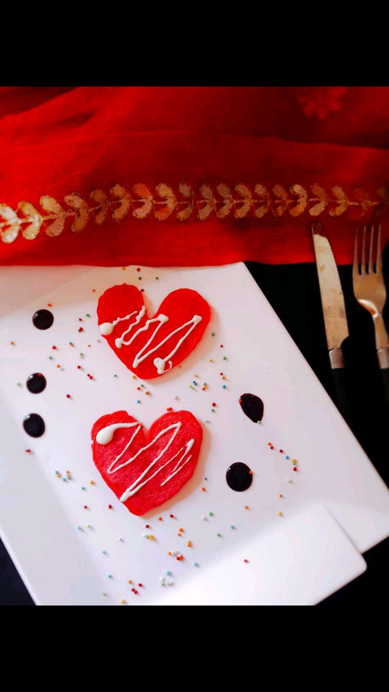

Pancakes

Ingredients
- 1 cup maida
- 1 tsp baking powder
- 2 tbsp oil
- Strawberry puree 2 tbsp
- Granulated Sugar 2 tbsp
- Milk 1/2 cup
- curd 2 tbsp
- Vanilla esssnce 1tsp
- 2tbsp melted white chocolate
Directions
- Mix maida, milk, curd ,vanilla,sugar 1tbsp oil , strawberry puree and mix properly.to avoid any lump
- Check consistency , if needed add some more Milk.
- Put griddle on medium flame.
- Apply some oil ingriddle.
- Put some batter on griddle and make heart shape.
- Flip both side.
- Make all pancake like this.
- Arrange in serving plate ..with hershy syrup.
- Pour some white chocolate over the pink hearts .
- Serve hot